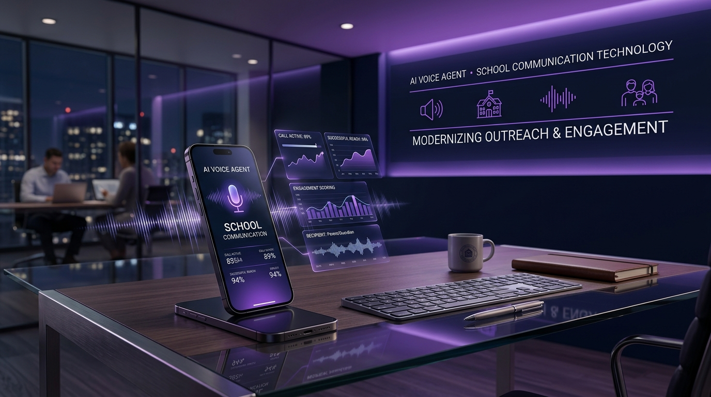

We Put an AI Voice Agent to Work: Automating ConnectEdu School Outreach
A real-world inRay Labs experiment with xAI Voice Agent Builder
At inRay Labs, whenever a breakthrough AI capability emerges, we ask one fundamental question:
Can this solve an actual business problem, or is it just another impressive chat demo?
With the launch of xAI’s Voice Agent Builder—a platform designed to build production voice agents with built-in telephony, knowledge retrieval, guardrails, and call observability—we decided to test it on one of our own core operational challenges: outbound school outreach for ConnectEdu.

The Operational Challenge: School Outreach at Scale
Reaching school administrators to introduce ConnectEdu (our school-parent communication platform) is essential, but outbound phone outreach is labor-intensive.
A human sales representative spends hours on repetitive first-contact tasks:
- Reaching the front desk or gatekeeper
- Navigating to the decision-maker
- Asking basic qualification questions about their current ERP or parent app
- Tagging outcomes and scheduling follow-ups
Most initial calls end with "the principal is busy", "we already have a system", or "call back next week". Having human reps navigate these repetitive initial touches limits throughput and drains energy.
This made first-tier outreach the perfect candidate for a voice AI agent.
Our Strategy: AI handles the repetitive first-touch qualification call. Our human sales team steps in for high-value conversations.
How the ConnectEdu Voice Agent Operates
Rather than aggressive selling, the agent acts as an intelligent first layer to qualify leads and gather context:
- Short Introduction: Briefly introduces ConnectEdu’s core value without delivering a lengthy sales pitch.
- Contact Identification: Asks for the administrator handling parent communication or school IT decisions.
- Current Setup Discovery: Identifies whether the school relies on WhatsApp, traditional ERPs, custom apps, or manual notices.
- Opportunity Assessment: Determines if their current communication tool leaves parents disengaged or staff overworked.
- Structured Lead Routing: Categorizes outcomes into actionable buckets:
- Qualified Lead → Routed immediately to human sales rep
- Follow-up Requested → Scheduled in CRM
- Existing Solution / Not Interested → Logged politely with context
Why Voice AI & Human Handoff Work Together
Outbound phone calls create immediate two-way engagement that static forms or unread emails cannot match. Supported by Grok Voice, xAI’s platform handles background noise, speech interruptions, and diverse accents—crucial for regional school markets like India.
However, voice agents are not meant to replace salespeople. Complex negotiations, custom product demos, and trust-building require human touch.
AI opens the door. Humans walk through it.
Rapid Iteration with xAI Voice Agent Builder
One of xAI’s biggest advantages is speed. By defining behavior in natural language and attaching knowledge docs, an initial agent can be initialized in minutes.
This unlocks a rapid, feedback-driven development loop:
1. Define Workflow ➔ 2. Attach Knowledge & Tools ➔ 3. Build Agent ➔ 4. Test Calls ➔ 5. Audit Transcripts & Audio ➔ 6. Refine Guardrails ➔ 7. Measure & Iterate
Key Benefits of Rapid Testing:
- Prompt & Persona Tuning: Adjust speaking pace and tone instantly based on call audio feedback.
- Knowledge Expansion: Instantly add answers for specific school ERP objections discovered during test calls.
- Guardrail Validation: Ensure the agent gracefully handles interruptions, abrupt hang-ups, or off-script questions.
The Bigger Picture: From AI Demos to Real Business Workflows
Our ConnectEdu experiment reflects a broader shift at inRay Labs: moving AI from simple Q&A bots to autonomous workflow participants.
| Traditional AI | Autonomous AI Voice Agent |
|---|---|
| Customer ➔ AI ➔ Simple Text Answer | Customer ➔ Voice AI ➔ Understand ➔ Retrieve Knowledge ➔ Qualify ➔ Update CRM ➔ Escalate to Human |
Key Takeaway
Making an AI voice agent speak is no longer the hard part. The real value lies in thoughtfully designing the underlying business process, qualification rules, and human escalation path.
About inRay Labs
inRay Labs engineers modern software platforms and explores practical AI applications that deliver measurable business value. ConnectEdu is our flagship communication platform connecting schools and parents.
We are actively testing the ConnectEdu Voice Agent and will share further data and benchmarks as live outreach scales.